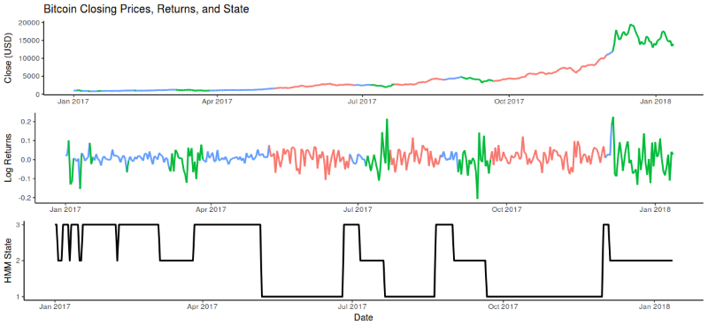
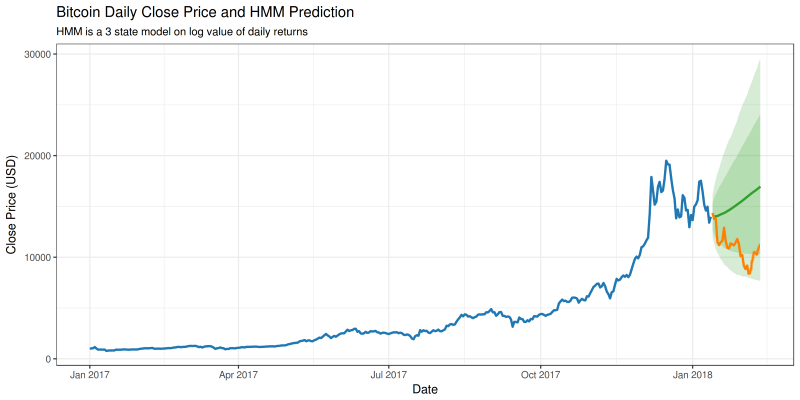

Given the recent turmoil of the crypto market, I thought it might be captivating to forecast the future market trend through Bitcoin's traders behaviour. This implies no other variables other than the very currency holders' induced volatility and relative returns are taken into account.
Figure 1: Bitcoin closing prices from Jan 1 2017 to Jan 13th 2018, log of returns of closing prices computed as lg[(Pt1-Pt0)/Pt0], and relative Hidden Markov Model States associated to log returns, processed by R.
Within this Markov process, outputs are log returns characterised by three states:
It is important to note the absence of negative returns and low volatility as 4th state. Such phenomenon has not occured throughout the selected time span, suggesting a possible underlying long-term appreciation of the digital currency. In addition, it emphasises how negative returns have been purely the result of panic selling generated by a volatile environment.
Predicing prices (or rather, a confidence interval in which they may lie) requires computing the distribution of log returns. By running a Shapiro-Wilk test in R, it is found that log daily returns are normally distributed, as the null hypothesis fails to be rejected. As a result, knowing that close prices are distributed on according to ~ N (E(close price), σ2), a number of fitted hidden markov model simulations may be run to obtain the expected Bitcoin daily close price at a 95% and 80% confidence interval. After 10,000 30-day simulations, E(close price) results are highlighted in green in figure 2.
Figure 2: expected bitcoin prices processed with R upon 10,000 daily similuations (green) plotted against actual market prices (orange).
Despite the actual trend still lies within the light green area corresponding to the 80% daily confidence interval, there is an evident gap between expected and actual prices, which yet has diminished in light of recent bullish forces. In addition, the hidden markov model has failed to predict the change in state: this is not a surprise and actually stands as indicator of when the unanticipated bubble burst. As a matter of fact, technical analysis, albeit precise in predicting one-way trends, fails at recognising sudden trajectory changes and should not be employed in highly unstable environments and maybe introducing vector autoregression tecniques may help to achieve better forecasts. Finally, it must be underlined how predicting the Bitcoin crash, define by many already as the most dramatic bubble in history, is a nearly impossible task to predict mathematically. In fact if one could at priori, there would be no such bubble.
2018 S. Zambetti